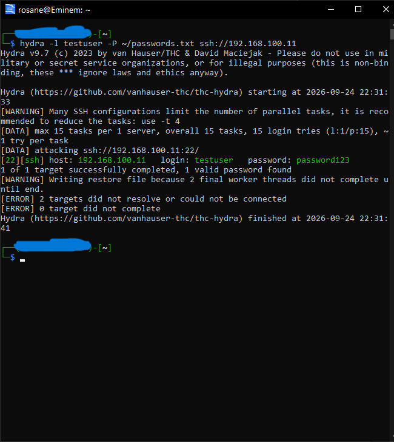
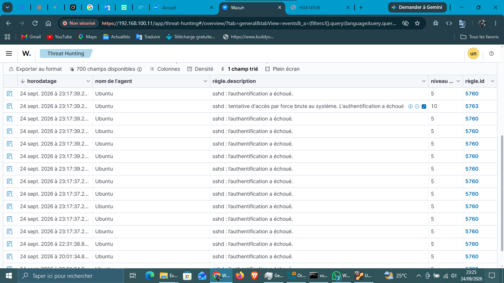
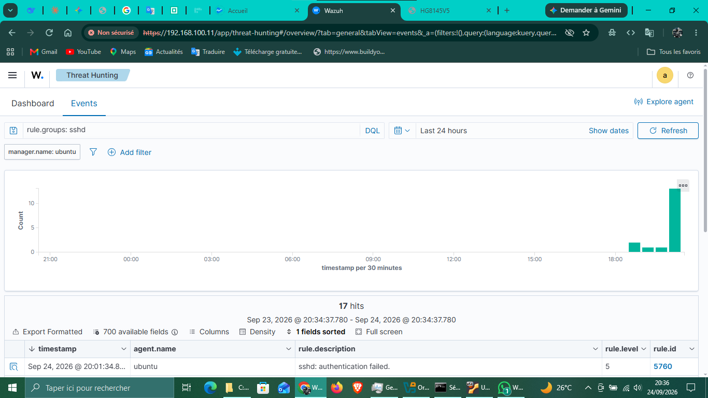

Je sécurise les sites web des PME et indépendants contre les piratages et le vol de données.
Étudiant en cybersécurité (L3) au Bénin. J'audite, je détecte les failles et je protège vos systèmes pour que vous puissiez exercer l'esprit tranquille.
Discutons de votre projetCe que je propose
Audit de Sécurité Express
Vous avez un doute sur la sécurité de votre site ? Je scanne votre site, je détecte les failles critiques (injections, force brute) et je vous fournis un rapport clair avec les solutions à appliquer.
Sécurisation & Protection
Je bloque les attaques, je sécurise vos bases de données et je vous accompagne sur les bonnes pratiques pour protéger les données de vos clients.
Sensibilisation & Formation
J'aide vos équipes à comprendre les risques numériques pour éviter les erreurs humaines (phishing, mots de passe faibles).
Études de cas & Démonstrations techniques
Détection et blocage d'une attaque par force brute SSH
Le problème : Un serveur Linux (Ubuntu) subit une attaque automatisée visant à deviner les mots de passe (attaque par force brute) via le protocole SSH.
Mon action : J'ai utilisé l'outil Hydra pour simuler l'attaque et comprendre la méthode utilisée par les pirates (ici, un dictionnaire de mots de passe sur le compte "testuser").
La solution : J'ai configuré un système de détection Wazuh pour surveiller les logs du serveur.
Le résultat : Wazuh a immédiatement détecté les tentatives d'authentification échouées (règle 5760) et a levé une alerte critique de niveau 10 pour "tentative d'accès par force brute" (règle 5763). Le système est désormais capable d'alerter en temps réel et de bloquer l'attaquant.



Projets techniques & R&D
Weak Audio Tracker
Analyseur audio portable pour bibliothèque musicale. Détection qualité, réparation, doublons. Voir le projet
Sonazia (Android)
Application Android complète : scan, nettoyage, doublons et lecteur audio intégré. Voir le projet
Ces projets démontrent ma capacité à concevoir des applications complètes et à utiliser l'IA de manière productive. Cette rigueur technique est au service de la sécurité de vos systèmes.
Prêt à sécuriser votre infrastructure ?
Parlons de vos besoins et voyons comment je peux vous aider à dormir sur vos deux oreilles.
Me contacter